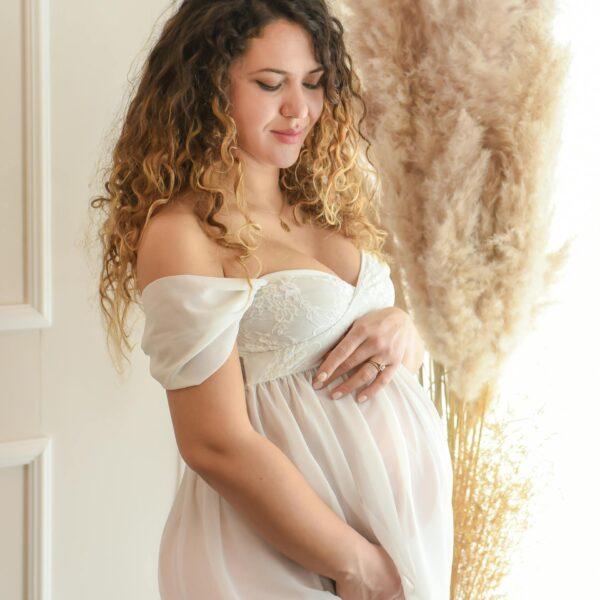
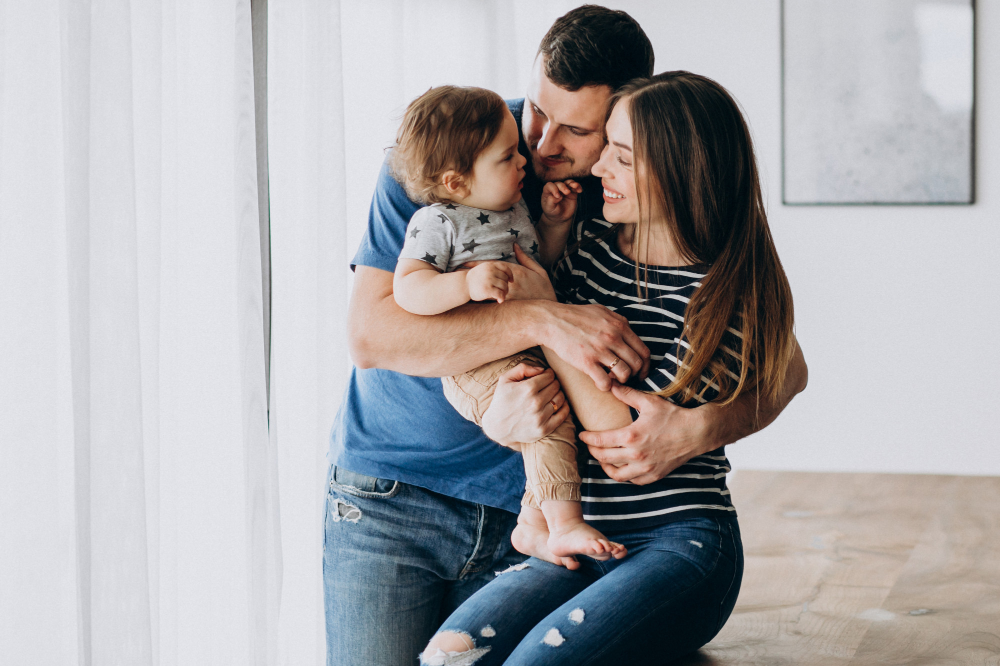

Make
Love
Book now
Toronto maternity, newborn & family photographer
A calm, guided experience with thoughtful prep, clear planning, and timeless photos for the seasons of family life you want to remember.
Choose the session that fits your family.

Maternity
Best planned for the third trimester, with styling guidance and a clean, elegant finish.
Explore maternity →
Newborn
Soft, baby-led portraits with parent and sibling images woven naturally into the session.
Explore newborn →
Family
Connection-first sessions with relaxed guidance, beautiful light, and genuine interaction.
Explore family →
1st Year
Milestone portraits and first birthday sessions designed for simple, joyful storytelling.
Explore 1st year →
Portfolio
Browse by maternity, newborn, first year, and family to see the style across seasons.
View portfolio →
Planning Resources
Clear answers on timing, what to wear, how sessions flow, and how to choose what fits best.
Read the blog →A clear, guided experience
Simple from inquiry to gallery.
People Studio is built for parents who want beautiful images and a process that feels organized from the start. You get clear communication, practical planning help, guidance on timing and clothing, and direction during the shoot so you never feel left guessing what to do.
- Reserve your session with the timing that fits your stage of family life.
- Receive planning notes on wardrobe, prep, and what to expect.
- Enjoy a guided session with a calm pace and natural posing support.
- Choose your favourites from an edited gallery designed to feel timeless in print.
“The whole process felt organized and easy, and the photos still feel emotional and true to us.”
“We wanted direction without stiff posing, and that balance came through beautifully.”
“From maternity through newborn and family photos, the experience felt consistent and thoughtful.”
Featured Gallery
Portfolio stories with an editorial feel.
Browse recent maternity, newborn, family, and studio collections curated to show light, connection, and movement. Tap any frame for an immersive slideshow.

Blog
When to schedule your newborn photos
Guidance on the ideal timing, what to book before birth, and how to keep the process flexible.
Blog
How to prepare for a family photo session
Practical tips on clothing, expectations for little ones, and how to keep the experience easy.
Blog
Studio or outdoor maternity session?
A simple way to compare mood, convenience, season, and the final feel of the images.
Gift cards, FAQs, and booking help
Planning a gift or deciding what to book?
Use the new gift card page, expanded FAQs, and contact form to make the next step straightforward.